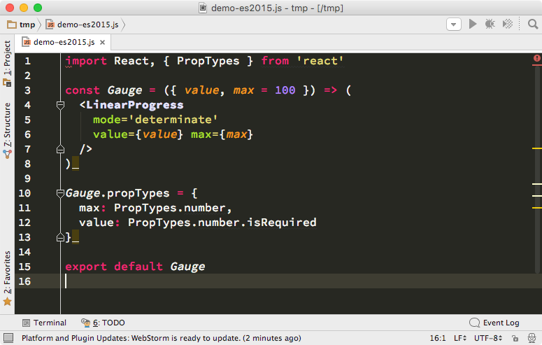
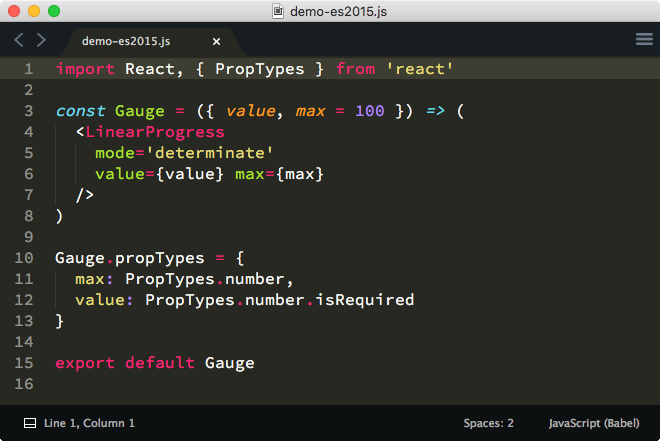
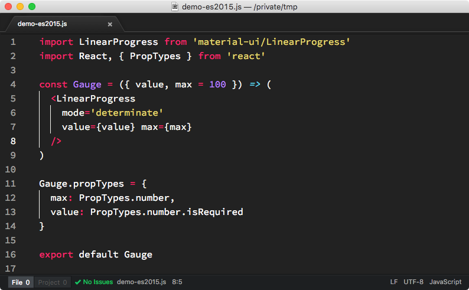
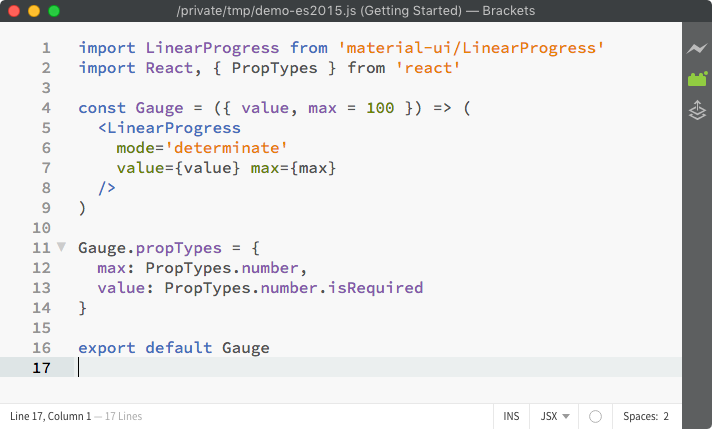
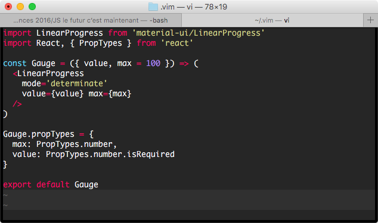
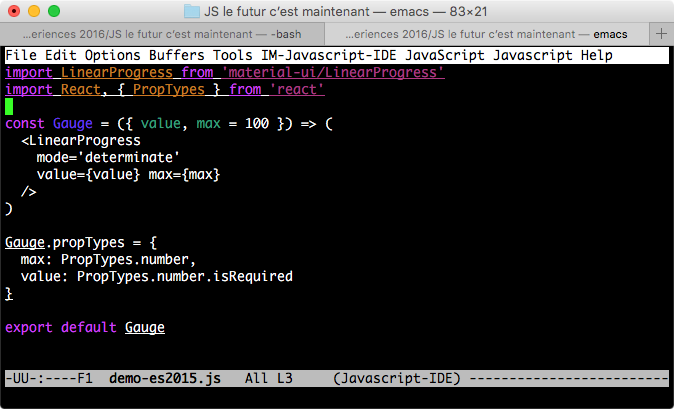
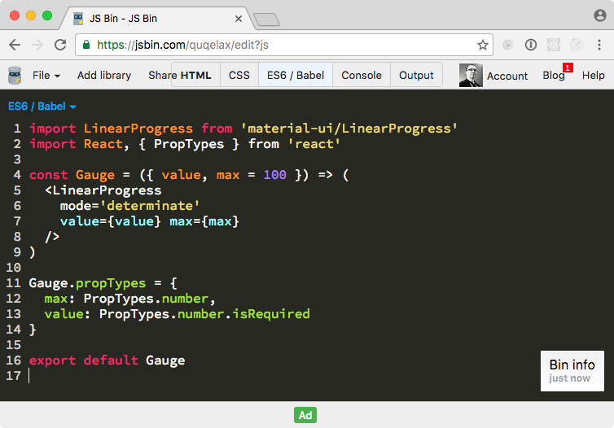
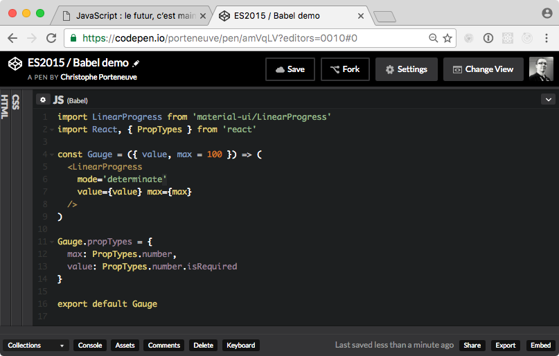
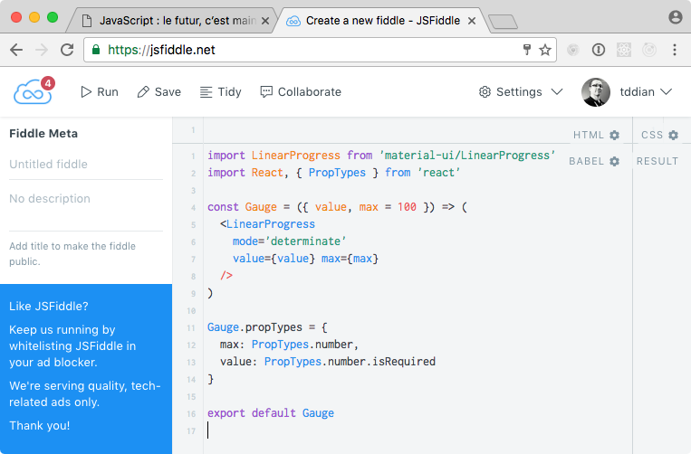
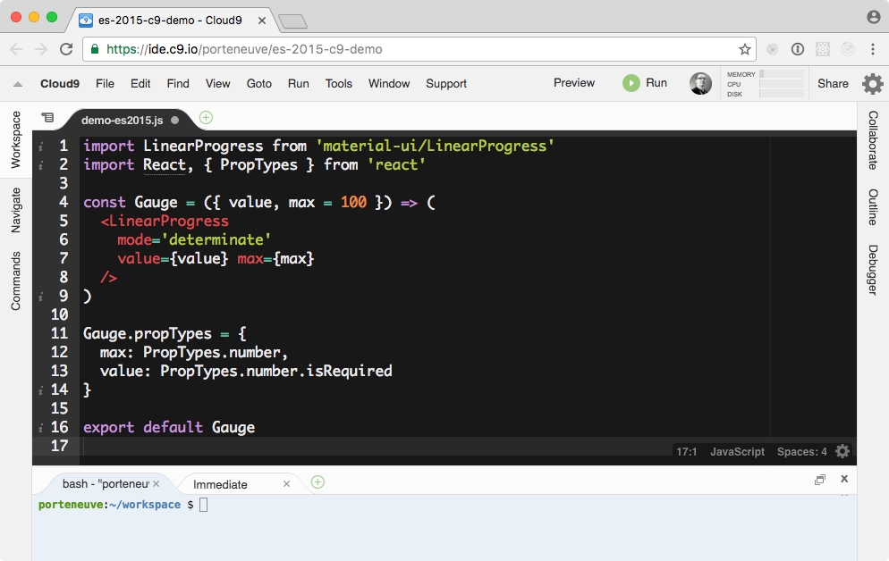

État de l’art d’ES2015+ dans Node.js et le navigateur
Une présentation de Christophe Porteneuve à Blend Web Mix 2016
Une présentation de Christophe Porteneuve à Blend Web Mix 2016
const christophe = {
age: 38.99931553730322,
family: { wife: 'Élodie', son: 'Maxence' },
city: 'Paris, FR',
company: 'Delicious Insights',
trainings: ['JS Total', 'Node.js', 'Git Total'],
upcoming: ['ES2015+', 'GitHub', 'Performance Web'],
webSince: 1995,
claimsToFame: [
'Prototype.js',
'Ruby On Rails',
'Bien Développer pour le Web 2.0',
'Prototype and Script.aculo.us',
'Paris Web',
'NodeSchool Paris'
]
}
Rappel : ES = ECMAScript = standard officiel de JavaScript.
Avant 2015, on disait ES6, ES7…
Par exemple, ES3 = 1999, ES5 = 2009, ES6 = 2015
Mais depuis 2015, on sort une version par an (en juin).
On « met la pression » de tenue à jour en numérotant par année.
Les noms officiels sont donc désormais ES2015, ES2016, etc.
La prise en charge native est bien meilleure que ce qu’on croit.
Et « 90 % » ça suffit en général largement 😉
Pas encore de solution propre aux modules ES2015 natifs.
Vous savez ce truc qui déboîte :
import React, { PropTypes } from 'react'
export default function Gauge ({ value, max = 100 }) {
return <LinearProgress mode='determinate' value={value} max={max} />
}
IE (même 11), Firefox < 45, Chrome < 49, Opera < 36, Safari < 10, iOS < 10, Node < 6, Android Browser…
En plus on n’a parlé que de ES2015 là, mais on a ES2016, non ?
Et l’an prochain, avec ES2017 on fait quoi ? Et l’année d’après ?
Transpileur : source ➡️ autre source
En l’occurence, « autre source » peut descendre jusqu’à ES5
L’idée : utiliser les dernières specs aujourd’hui (du moment qu’elles sont transpilables).
La performance n’est, en pratique, pas un problème.
Babel est téléchargé (npm) plus de 57K/jour
Environ 2 000 modules en dépendent
Quand Babel a un souci, l’écosystème JS a chaud…
Intégré avec l’univers (on y reviendra)
A permis l’essor (enfin !) d’ES2015+ dans des projets de premier plan (React, Ember 2, Aurelia, JSPM…) et leurs utilisateurs (Facebook, Airbnb, Instagram, etc.)
Né en 2014, le bébé de Sebastian McKenzie 🙏.
Désormais 250+ contributeurs.
Comme Facebook l’a jugé critique à la mission, ils ont fait comme d’hab’ : on embauche le créateur et les plus gros contributeurs, juste pour continuer.
Élément critique d’infrastructure pour beaucoup de grosses boîtes, et 100% FLOSS, donc on est tranquilles.
On aura toujours besoin de Babel pour jouer tôt avec les fonctionnalités futures (ce qui est essentiel au processus du TC39).
Depuis Babel 6, on choisit les syntaxes qu’on veut transpiler. Tout le reste est laissé tel quel (considéré natif).
Plus la prise en charge native augmente, moins on a besoin de transpiler de portions de code. On a tout intérêt à éviter l’approche « bulldozer » hors des PoC / démos / tutos.
On gagne en perfs au build (transpilation) et à l’exécution (code natif plutôt que polyfillé).
Un plugin de syntaxe permet au parser de reconnaître une syntaxe au sein du flux JS. Mais Babel ne la transpile pas pour autant.
Un plugin de transform(ation) applique le transpiling correspondant pour aboutir à de l’ES5. Ils exploitent automatiquement les éventuels plugins de syntaxe dont ils ont besoin.
Mais ça fait du monde : Babel propose actuellement plus de 60 transforms, dont 21 rien que pour ES2015 !
On a donc la notion de preset : des groupes thématiques de plugins pour un but précis. On en compte…
Par exemple, latest transpile l’univers (tout ES2015+), mais les contribs ont latest-minimal, idéal en Node, qui feature-detect point par point 😎
On peut bien sûr mélanger presets et plugins spécifiques.
On l’a vu, Babel gère déjà ES2016, ES2017, et les stades qui alimenteront les versions ultérieures. Par exemple :
Mais on a aussi des plugins (officiels !) de syntaxes tierces (notamment JSX et les annotations Flow), de conversion de modules (ex. ES2015 ➡️ CommonJS), de minification / optimisation (notamment pour React).
Soit via un fichier .babelrc (marche partout)
Soit via une clé "babel" dans le package.json (si tu transpiles au sein d’un script npm).
{
"presets": ["latest-minimal"],
"plugins": [
"transform-object-rest-spread", "transform-class-properties",
"transform-function-bind"
]
}
Du coup il faut avoir les modules :
npm install --save-dev babel-preset-latest-minimal \
babel-transform-object-rest-spread babel-transform-class-properties \
babel-transform-function-bind
En gros, il te faut tout. IE9 a 100% d’ES5 (hors le mode strict), mais 0% d’ES2015. IE10 en a 3%, IE11… 11%. Donc bon.
"presets": ["es2015"] // ou "latest" si tu veux E2015+
Tu prends les 2 dernières versions (façon Autoprefixer), tu examines tes besoins et la table de compatibilité, et tu listes ce qui manque… Exemple :
"plugins": [
"transform-es2015-parameters",
"transform-es2015-destructuring",
"transform-es2015-spread",
"transform-async-to-generator",
"transform-transform-runtime",
"transform-regenerator"
]
On a des presets dédiés, maintenus par la communauté. Exemple :
"presets": ["es2015-node4", "es2016-node4"], // ou ["latest-minimal"]
"plugins": ["transform-regenerator"]
Mais c’est bon avec Node 4, là… Node 6 est la nouvelle LTS et on est sur Node 7 maintenant, les gens !
Excellente prise en charge native de ES2015+ (99% depuis la 6.8), le preset communautaire est donc nettement plus léger.
"presets": ["latest-node6"] // ou ["latest-minimal"]
Electron 1.4.5 est basé sur Chromium 53, Node 6.5 et v8 5.3, autant dire que vous avez un gros, gros paquet d’ES pris en charge en natif (quasiment tout ES2016 et diverses parties d’ES2017).
Vu que le v8 est partagé, la meilleure approche est sans doute :
"presets": ["latest-minimal"]
ext install vscode-babel-coloring
ext install theme-monokaiextended # meilleure différenciation visuelle
ES2015 est pas mal intégré dans la dernière version.
Les versions 2016 récentes (ex. WebStorm 2016.2+) intègrent ES2015 en natif, ainsi que Babel comme watcher.
Désespérément à la rue (et lent, et lourd…) mais de valeureux membres de la communauté maintiennent Tern IDE, basé sur l’excellent Tern.js.

Installer PackageControl puis le paquet Babel (pas le paquet ES.Next). Idéalement, faire de « JavaScript (Babel) » la syntaxe par défaut pour les fichiers .js.
Bonne prise en charge en natif ; nombreuses extensions possibles avec les paquets language-babel et atom-ternjs.
Gestion correcte en natif, on aura besoin de l’extension JSX si on utilise cette syntaxe complémentaire.
Non, je plaisante.
Sidéré qu’autant de que des gens s’en servent encore…
Évidemment, on peut tout faire.
Les trois plugins les plus utilisés sont vim-javascript, vim-jsx et es.next.syntax.vim.
Évidemment… on peut tout faire.
Manifestement, le plugin populaire est js2-mode.
Il suffit de choisir le mode ES6 / Babel (ou JSX) dans la liste de syntaxes pour le panneau JavaScript.
Attention, il utilise JSHint par défaut plutôt qu’ESLint, ce qui rend moins pratique la prise en charge d’ES2015.
Il suffit de choisir Babel comme préprocesseur dans les réglages du panneau JavaScript.
Il suffit de choisir Babel comme langage dans les réglages du panneau JavaScript.
ES2015+ et Babel pris en charge nativement.
C’est le transform babelify qui fait l’interface. CLI :
npm install --save-dev babelify babel-core \
babel-preset-latest babel-preset-react
browserify index.js -o bundle.js -t babelify --presets latest react
Ou dans votre script de bundling :
var fs = require('fs')
var browserify = require('browserify')
browserify('./index.js')
.transform('babelify', { presets: ['latest', 'react'] })
.bundle()
.pipe(fs.createWriteStream('bundle.js'))
On utilise le babel-loader. La config ressemble à ceci :
// …
module: {
// …
loaders: [
// …
{
test: /\.(?:jsx?|es6)$/,
exclude: /(?:node_modules|bower_components)/,
loader: 'babel',
query: { presets: ['latest', 'react'] }
}
// …
]
// …
}
Le plus simple, c’est le plugin babel
npm install --save-dev rollup-plugin-babel babel-preset-es2015-rollup
Dans la config Rollup :
import json from 'rollup-plugin-json'
import babel from 'rollup-plugin-babel'
export default {
entry: './index.js',
format: 'cjs',
plugins: [ json(), babel() ],
dest: 'bundle.js'
};
L’activation du preset se fait par un fichier .babelrc.
Naturellement, on a gulp-babel. Pour la version avec les sourcemaps, ça donne un truc dans ce style :
var gulp = require('gulp')
var sourcemaps = require('gulp-sourcemaps')
var babel = require('gulp-babel')
var concat = require('gulp-concat')
gulp.task('default', function () {
return gulp.src('src/**\/*.js')
.pipe(sourcemaps.init())
.pipe(babel())
.pipe(concat('bundle.js'))
.pipe(sourcemaps.write('.'))
.pipe(gulp.dest('dist'))
})
Là aussi, configuration externe par .babelrc.
Pas de surprise : il y a grunt-babel. Exemple :
require('load-grunt-tasks')(grunt)
grunt.initConfig({
babel: {
options: { sourceMap: true },
dist: {
files: { 'dist/bundle.js': 'src/**\/*.js' }
}
}
})
grunt.registerTask('default', ['babel'])
Et re-configuration par .babelrc.
Moi non, mais je suis sûr que Babel oui.
D’autant que la majorité de ces intégrations sont officielles, maintenues au sein du projet Babel.
TS ≈ ES2016 + annotations de type optionnelles (+ compat JSX)
TS2 transpile vers ES5 par défaut, mais peut viser ES2015.
Inclus par défaut dans VS2013u2 et ultérieurs + VSCode.
Peu d’inférence de type ; se repose surtout sur les annotations.
Comme souvent avec IntelliSense, on a des définitions pré-compilées externes pour éviter de devoir faire de l’inférence profonde. Vaste référentiel sur DefinitelyTyped.
La documentation liste pas mal d’intégration classiques : Browserify, Webpack, Grunt, Gulp, JSPM/Rollup, etc.
En somme, ça se fait bien.
TS n’est pas le seul moyen d’avoir des infos de typage fines sur du code JS. Le projet Flow, de Facebook, est excellent.
J’ai souvent entendu que les retours de Flow étaient plus utiles / efficaces que ceux de TS, mais je n’ai pas comparé personnellement.
Notez que Babel est capable de lire du code annoté Flow, et que des outils avancés comme Tern.js savent exploiter les annotations Flow pour leur assistance au code.
Christophe Porteneuve
Les slides sont sur bit.ly/blend-es2015